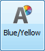
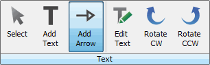
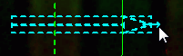
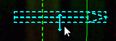
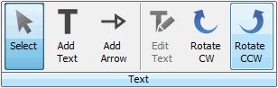
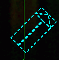

NOTE:Click Features at the top left corner of the Display panel to toggle between displaying and hiding all features on the image. Features include Bands, Lanes, Wells, Spots, Annotations, and more. Select specific features to display or hide on the Show group in each Analysis tab.
In addition to adding text to the image, you can add arrows, size them, rotate them, and specify their color. You can select the color of the arrow before adding it, or change the color later.

the Font group of the Annotation tab to open the Annotation Color dialog. Click the desired single color or color pair. If you select a color pair, the first color shown appears on reverse gray scale images and the second color appears on all other images.NOTE: You can change the color after you add the arrow, by selecting it and then changing the color. Refer to Resize the Arrow below for instructions on how to select the arrow.
To add an arrow to the image, click the Add Arrow button in the Text group of the Annotation ribbon.

There are two ways to resize the arrow. You can increase or decrease the length and increase or decrease the width.
Click Select and select the arrow.
NOTE: If the arrow is close to a lane or a band, the easiest way to select the arrow is to use the cursor to drag a small box through the center of the arrow.


After you have added the arrow, you may want to adjust its placement -- move it up or down or to another spot on the image.


{kind=link}